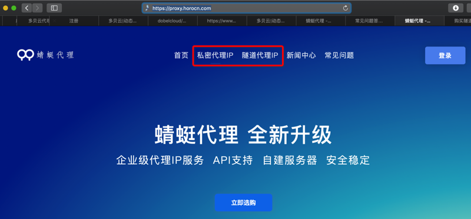
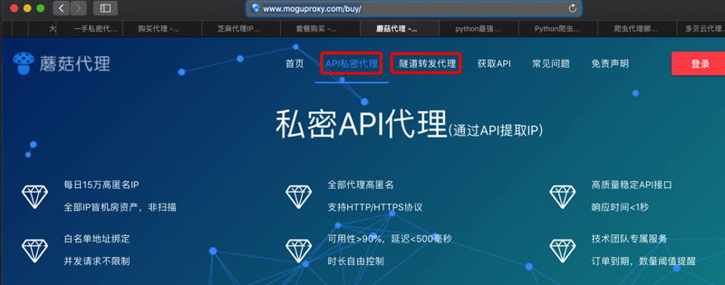
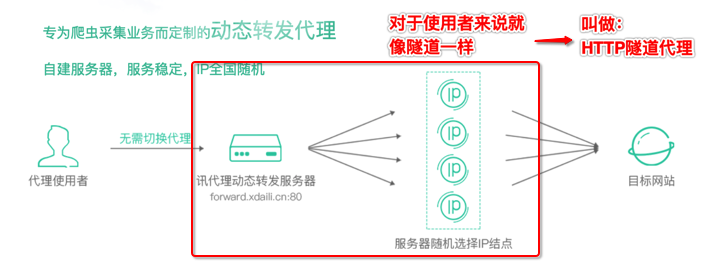
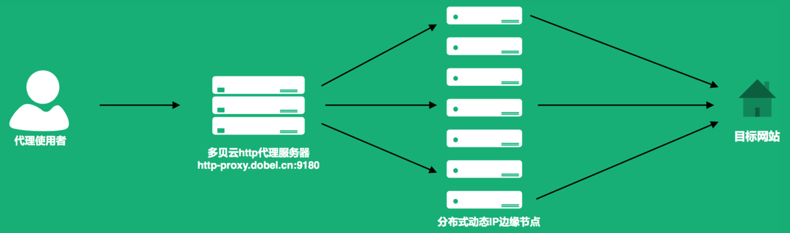

私密代理 vs 隧道代理
在一些IP代理池提供商中看到了：
- 私密代理IP
- 隧道代理IP
比如：
- 蜻蜓代理 - 企业级高质量代理ip平台
- 
- 蘑菇代理 - 购买API代理
- 
- 动态版HTTP隧道服务说明 | 阿布云 - 为大数据赋能
- 动态版 HTTP隧道
好像没太明白：
IP代理池，都是动态的IP
但是 私密 vs 隧道 是什么区别？
再自己看解释：看懂了：
- 蜻蜓代理
- 文档
- 含义
- 私密代理
- 通过API提取IP
- 全部代理高匿名，白名单地址绑定，每天最高40万IP
- 通过API提取IP
- 隧道代理
- 统一入口，随机动态IP
- 专为爬虫采集业务而定制
- 统一入口，随机动态IP
- 私密代理
- 蘑菇代理
- 文档
- 含义
- 私密API代理
- 通过API提取IP
- 请求API接口，直接返回IP与端口
- HTTP隧道代理(动态转发)
- 统一入口，随机动态出口，每一个请求一个随机IP
- 接入固定代理服务器，动态转发请求
- 私密API代理
总结：
- 私密代理=私密API代理=私密代理API
- 获取动态IP方式：通过API获取代理服务器的信息（IP和端口）
- 使用方式：你调用api接口获取到IP和端口，自己用IP和端口去代理试用
- 后来也才看懂
- 大象代理IP提取-IP地址购买-API-代理服务器提取购买
- 中的：
- API返回格式：文本
- API是否返回地区
- API是否返回运营商
- 中的：
- 购买代理 - 快代理
- 中的：
- API最快调用频率 1秒10次
- API允许调用IP数 2个起
- API支持返回json, xml
- 中的：
- 短效优质代理IP- 站大爷
- 中的：
- 每次提取IP数：5个
- 中的：
- 说的就是：
- 你自己：去调用api
- 返回
- 的内容：IP地址列表
- 即一次性往往会返回多个IP地址
- 比如
5个，10个，100个等等
- 比如
- 即一次性往往会返回多个IP地址
- 格式：
xml/json/txt
- 的内容：IP地址列表
- 且你调用API接口的频率也不能太高
- 比如最多
10次/秒
- 比如最多
- 大象代理IP提取-IP地址购买-API-代理服务器提取购买
- 后来也才看懂
- HTTP隧道代理
- 获取动态IP方式：通过http代理提取
- 此处的 http代理=HTTP隧道=HTTP隧道代理=服务商提供的一个HTTP代理服务器
- 可以动态的，根据不同请求，内部使用不同IP
- 此处的 http代理=HTTP隧道=HTTP隧道代理=服务商提供的一个HTTP代理服务器
- 使用方法：配置好HTTP（隧道）代理服务器后，后续请求，先到HTTP代理服务器，内部会自动的使用动态的IP转发请求
- 适合爬虫采集
- 获取动态IP方式：通过http代理提取
HTTP隧道代理
IP代理 根据协议，分很多种：
- HTTP/HTTPS
- SOCKS
- 等等
其中用HTTP协议的隧道代理，叫HTTP隧道代理
比如：
用图解释就更容易懂了：
- 
- 